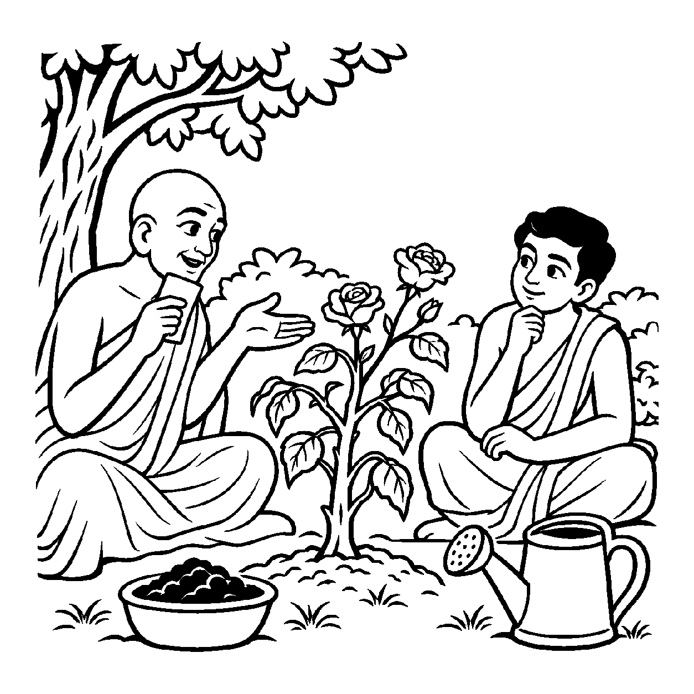

એક વિશાળ વટવૃક્ષ જમીન પર અખંડ ઊભું છે. વટવૃક્ષ એક જ સજીવ વનસ્પતિ છે. છતાં પણ સામાન્ય માણસને વૃક્ષનું સ્વરૂપ સમજાવવા માટે માળી કહે છે: "આ વૃક્ષનું મજબૂત થડ છે, આ તેની છાયાદાર ડાળીઓ છે, આ તેના લીલાંછમ પાંદડાં છે અને આ તેના મધુર ટેટા (ફળ) છે." ડાળીઓ અને પાંદડાં વૃક્ષથી ભિન્ન નથી, છતાં સમજણ માટે આ ભેદ કરવો ઉપયોગી બને છે. તેવી જ રીતે જ્યારે અખંડ ચૈતન્યમય આત્મામાં — "આત્મામાં સમ્યગ્જ્ઞાન ગુણ છે, દર્શન ગુણ છે, ચારિત્ર ગુણ છે, સુખ અને વીર્ય ગુણ છે" — એમ ગુણ અને ગુણી વચ્ચે ભેદની કલ્પના સાપેક્ષ રાખીને આત્મતત્ત્વનું વાણી દ્વારા પ્રતિપાદન કરવામાં આવે, ત્યારે તે 'ભેદકલ્પનાસાપેક્ષ અશુદ્ધ દ્રવ્યાર્થિક પ્રતિપાદક વ્યવહાર' કહેવાય છે.
અભેદ નયમાં આત્મા એકરસ હતો, પરંતુ આ નય ભેદની કલ્પના સાપેક્ષ રાખે છે. તે અશુદ્ધ એટલા માટે કહેવાય છે કારણ કે અખંડ દ્રવ્યમાં ભેદ પાડવો એ વ્યવહારગત કલ્પના છે. છતાં તે દ્રવ્યાર્થિક પ્રતિપાદક વ્યવહાર છે કારણ કે આ ભેદ દ્વારા આત્માના જ મૂળભૂત ગુણવૈભવને પ્રગટ કરવામાં આવે છે.
જો ગુણોના ભેદ ન પાડીએ તો સાધકને ખબર જ ન પડે કે મારામાં કયો ગુણ ક્ષીણ છે અને કયો ગુણ ખીલવવાની જરૂર છે! આ નય સાધનાને વૈજ્ઞાનિક રૂપ આપે છે.
જ્ઞાન દર્શન ચારિત્રના, ભેદ પાડી સમજાય;
ભેદ કલ્પના વ્યવહારે, આતમ મહિમા ગવાય.
અખંડ દ્રવ્યે ગુણ તણા, પાડી શુભ વિકલ્પ;
સાધક સાધે ગુણોને, ટળે મોહ સંકલ્પ.
જ્ઞાન-દર્શનના વ્યવહારિક ભેદોને સાધન માત્ર સમજી, અંતે અખંડ અભેદ આત્મસ્વરૂપમાં પ્રવેશ કરવો.

ધર્મક્ષેત્રના એક અભ્યાસુ શિષ્ય નિર્મલકુમારે ગુરુજીને પૂછ્યું: "ગુરુદેવ! તમે રોજ કહો છો કે મોક્ષ પામવા માટે સમ્યગ્દર્શન, સમ્યગ્જ્ઞાન અને સમ્યક્ચારિત્ર આ ત્રણેય ગુણોની જરૂર છે. પણ સમયસારમાં તો લખ્યું છે કે આત્મામાં કોઈ ભેદ નથી, આત્મા તો એકલો જ્ઞાયક છે! તો પછી આ રત્નત્રયના ત્રણ ભેદો શા માટે પાડવામાં આવ્યા છે? શું આ ભેદો આપણને અખંડ આત્માથી ભટકાવી નથી દેતા?" નિર્મલકુમારના મનમાં આ ભેદકલ્પના પ્રત્યે ભારે વિરોધ જાગ્યો હતો.
તે જ સમયે ઉપાશ્રયના બગીચામાં એક માળી ગુલાબના છોડની માવજત કરી રહ્યો હતો. આચાર્યશ્રી નિર્મલકુમારને બગીચામાં લઈ ગયા અને પૂછ્યું, "નિર્મલ, આ છોડમાં શું ખામી છે?" નિર્મલકુમારે છોડને ધ્યાનથી જોઈને કહ્યું, "મહારાજ, છોડનું મૂળ તો મજબૂત છે, પણ તેના પાંદડાં સુકાઈ ગયાં છે અને ફૂલ ખીલતાં નથી." આચાર્યશ્રીએ સ્મિત સાથે કહ્યું, "નિર્મલ! જો તું એમ કહે કે 'છોડ તો એક અખંડ વસ્તુ છે, તેમાં મૂળ, પાંદડાં કે ફૂલનો ભેદ ન કરાય', તો પછી તું ખાતર ક્યાં નાખીશ અને પાણી ક્યાં છાંટીશ?" નિર્મલકુમાર ક્ષણવાર અટકીને બોલ્યા, "ખાતર મૂળમાં નખાય અને પાણી પાંદડાં પર છંટાય." આચાર્યશ્રીએ પ્રેમથી કહ્યું, "બસ! આ જ ભેદકલ્પનાસાપેક્ષ અશુદ્ધ દ્રવ્યાર્થિક પ્રતિપાદક વ્યવહાર છે! આત્મા નિશ્ચયથી અખંડ વૃક્ષ જેવો છે, છતાં દર્શન ગુણ મૂળ જેવો છે, જ્ઞાન ગુણ થડ જેવું છે અને ચારિત્ર ગુણ ફૂલ-ફળ જેવું છે! સાધના કરવા માટે ગુણોના ભેદ પાડવા અનિવાર્ય છે. જ્યાં સુધી તું જ્ઞાન, દર્શન અને ચારિત્રના અલગ કાર્યોને નહીં સમજે, ત્યાં સુધી તું મોક્ષમાર્ગ કેવી રીતે સિદ્ધ કરી શકીશ?" આચાર્યશ્રીના આ દ્રષ્ટાંતનું પાન કરતાં જ નિર્મલકુમારનો સંશય દૂર થઈ ગયો અને તેમને રત્નત્રયની આરાધનાનું સાચું રહસ્ય સમજાયું.
જો આ નયને એકાંત સત્ય માનીને સાધક ગુણોને એટલા બધા સ્વતંત્ર માની લે કે આત્મા અખંડ ન રહેતાં ટુકડે-ટુકડા થઈ જાય, તો વૈશેષિક મત જેવો દોષ ઊભો થાય છે. આવી એકાંત જડતાથી જીવ વર્તમાન વ્યવહારિક સાધના અને કર્તવ્યોની ઉપેક્ષા કરી બેસે છે અને ક્રમિક પરિણામોને સુધાર્યા વિના અકાળે પૂર્ણતાના મિથ્યા સંતોષમાં રાચે છે.
આ નય જ્યારે અભેદ દ્રષ્ટિ સાથે સુમેળ સાધે છે, ત્યારે સાધક ગુણોના વિશ્લેષણ દ્વારા સાધનાને પરિપૂર્ણ કરીને અંતે અખંડ આત્મતત્ત્વમાં સમાધિ પામે છે.